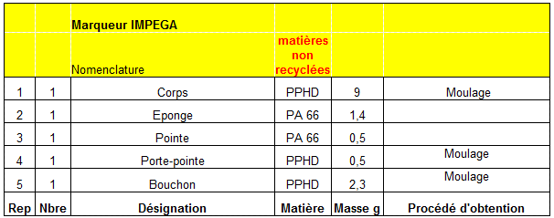
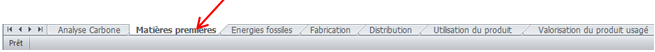
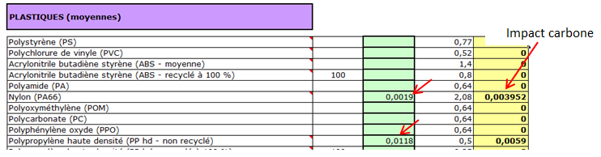
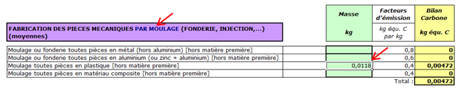
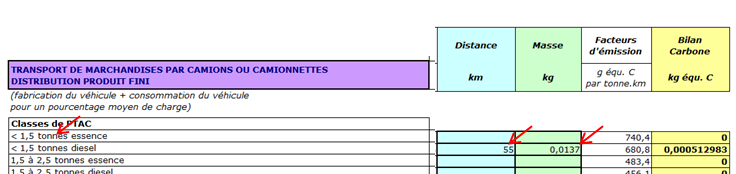
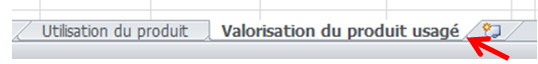
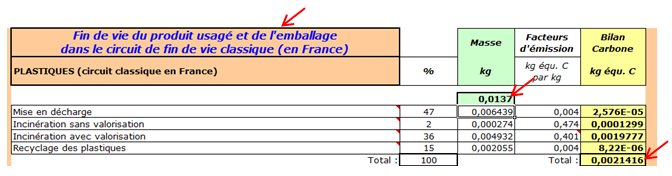
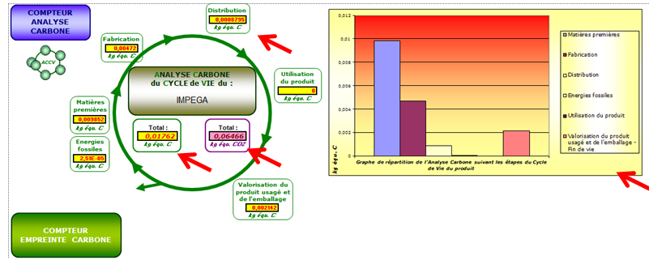
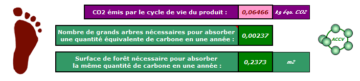

DOCUMENTATION RESSOURCE
Nous traiterons ici à titre d'exemple un marqueur pour tableau de la marque « Impega ».
:

RENSEIGNER LES MATIERES PREMIERES:
Dans les onglets en bas de page : choisir « matières premières »

Recenser les différentes matières à l'aide de la nomenclature ci-dessus
Pièces en PPHD : 9 + 0,5 + 2,3 = 11.8g ;
Pièces en PA6.6 : 1,4 + 0,5 = 1,9g
Poids total 1,9 + 11,8 = 13,7 g
Attention aux unités , n'oubliez pas de rentrer vos masse de matière en Kg dans votre tableau (1kg = 1000 gr)!
Remplir les cases bleues et surtout vertes du tableau ci dessous, le calcul de l'impact carbone est automatiquement calculé dans les cases jaunes.

PROCEDES DE FABRICATION:
Choisir l'onglet « Fabrication », indiquer les procédés de fabrication que vous connaissez


TRANSPORT:
Choisir l'onglet « Distribution », par rapport aux informations données, (transport par avion, camion, type de camion,) donner la distance parcourue.
Attention la distribution peut être faite par plusieurs moyens de transport différents, il faudra dans ce cas lister les différents trajets : on parle alors de « transport multimodal ».
NOTA : la marque Impega n'existe plus ; elle a été reprise par Lyreco dont les usines sont près de Valenciennes, donc transport par tracteur routier type semi-remorque jusqu'à la plate forme régionale et distribution par camionnette diesel dont le poids est inférieur à 1,5 tonnes.
On prend donc ici une distance jusqu'à notre région de 910 km ; et 55 km jusque notre ville

UTILISATION DU PRODUIT:
On considèrera que pendant l'utilisation du feutre, le fait d’écrire au tableau ne génère pas d’impact énergétique.
VALORISATION DU PRODUIT USAGE:
Choisir l'onglet « Valorisation du produit usagé », on utilisera le circuit classique de traitement des déchets.

La totalité des matériaux (13,7grammes) est ici en plastique. on renseigne donc simplement ici le poids dans la case correspondante.
Nota : Les pourcentages de recyclages sont fixés par le logiciel
EXPLOITATION DES RESULTATS:
Le tableur permet d'effectuer à partir de vos collectes de données une analyse globale de l'impact kg équivalent carbone (Kg equ.C) et de l'impact kg équivalent CO2 (Kg equ. CO2)


Pour affiner la compréhension du tableur cliquer sur : Fonctionnement tableur "bilan carbone"
Created with the Personal Edition of HelpNDoc: Free iPhone documentation generator